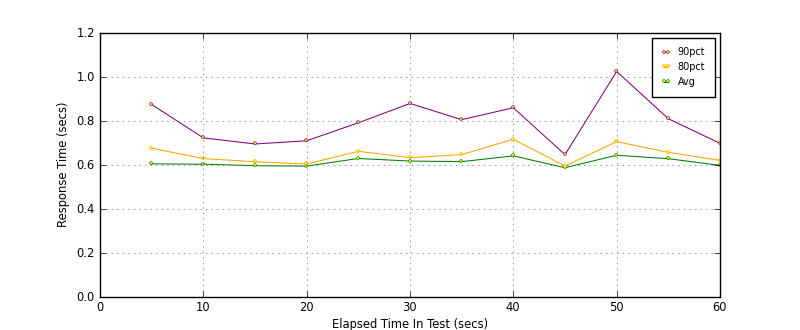
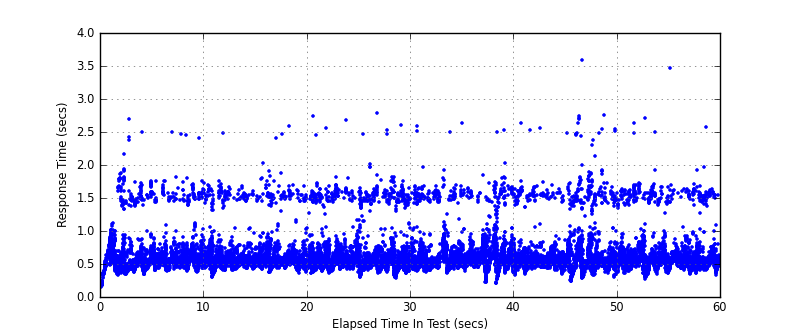
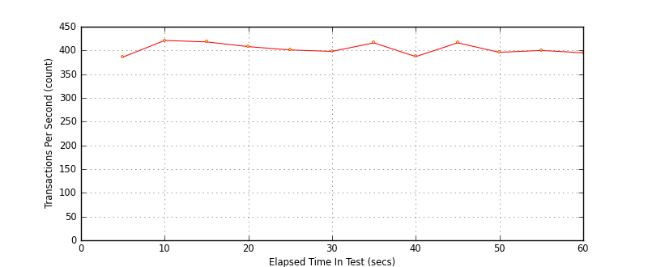

Performance Results Report
Summary
transactions: 24485
errors: 0
run time: 60 secs
rampup: 0 secs
test start: 2017-05-24 18:57:25
test finish: 2017-05-24 18:58:25
time-series interval: 5 secs
workload configuration:
| group name | threads | script name |
|---|
| user_group-21 | 10 | redis_stress.py |
| user_group-20 | 10 | redis_stress.py |
| user_group-23 | 10 | redis_stress.py |
| user_group-22 | 10 | redis_stress.py |
| user_group-25 | 10 | redis_stress.py |
| user_group-24 | 10 | redis_stress.py |
| user_group-2 | 10 | redis_stress.py |
| user_group-3 | 10 | redis_stress.py |
| user_group-1 | 10 | redis_stress.py |
| user_group-6 | 10 | redis_stress.py |
| user_group-7 | 10 | redis_stress.py |
| user_group-4 | 10 | redis_stress.py |
| user_group-5 | 10 | redis_stress.py |
| user_group-8 | 10 | redis_stress.py |
| user_group-9 | 10 | redis_stress.py |
| user_group-10 | 10 | redis_stress.py |
| user_group-11 | 10 | redis_stress.py |
| user_group-12 | 10 | redis_stress.py |
| user_group-13 | 10 | redis_stress.py |
| user_group-14 | 10 | redis_stress.py |
| user_group-15 | 10 | redis_stress.py |
| user_group-16 | 10 | redis_stress.py |
| user_group-17 | 10 | redis_stress.py |
| user_group-18 | 10 | redis_stress.py |
| user_group-19 | 10 | redis_stress.py |
All Transactions
Transaction Response Summary (secs)
| count | min | avg | 80pct | 90pct | 95pct | max | stdev |
|---|
| 24485 | 0.151 | 0.613 | 0.641 | 0.785 | 1.462 | 3.582 | 0.277 |
Interval Details (secs)
| interval | count | rate | min | avg | 80pct | 90pct | 95pct | max | stdev |
|---|
| 1 | 1933 | 386.60 | 0.151 | 0.605 | 0.676 | 0.875 | 1.484 | 2.682 | 0.313 |
| 2 | 2108 | 421.60 | 0.376 | 0.604 | 0.629 | 0.723 | 1.019 | 2.489 | 0.241 |
| 3 | 2091 | 418.20 | 0.295 | 0.597 | 0.615 | 0.696 | 1.035 | 2.480 | 0.234 |
| 4 | 2043 | 408.60 | 0.357 | 0.595 | 0.605 | 0.710 | 0.957 | 2.576 | 0.236 |
| 5 | 2006 | 401.20 | 0.355 | 0.630 | 0.662 | 0.792 | 1.491 | 2.730 | 0.278 |
| 6 | 1994 | 398.80 | 0.276 | 0.618 | 0.633 | 0.880 | 1.490 | 2.786 | 0.316 |
| 7 | 2080 | 416.00 | 0.363 | 0.615 | 0.648 | 0.806 | 1.476 | 2.636 | 0.277 |
| 8 | 1935 | 387.00 | 0.198 | 0.641 | 0.717 | 0.860 | 1.312 | 2.517 | 0.260 |
| 9 | 2081 | 416.20 | 0.330 | 0.588 | 0.595 | 0.647 | 0.856 | 2.631 | 0.235 |
| 10 | 1983 | 396.60 | 0.232 | 0.644 | 0.706 | 1.025 | 1.514 | 3.582 | 0.367 |
| 11 | 2004 | 400.80 | 0.273 | 0.629 | 0.657 | 0.810 | 1.484 | 2.705 | 0.288 |
| 12 | 1975 | 395.00 | 0.331 | 0.598 | 0.621 | 0.699 | 1.425 | 3.469 | 0.251 |
Graphs
Response Time: 5 sec time-series

Response Time: raw data (all points)

Throughput: 5 sec time-series
